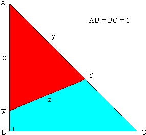
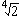
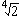
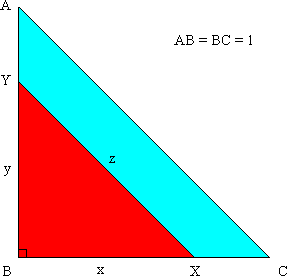
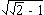
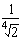
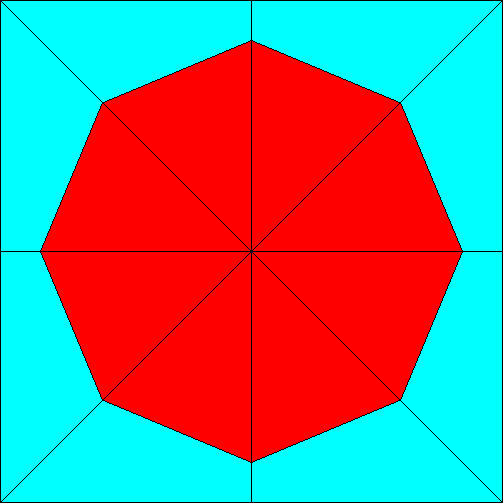
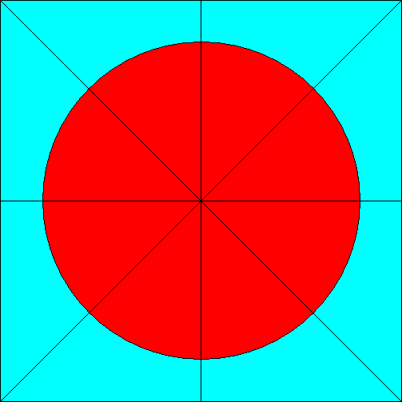
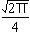

Solution to puzzle 77: Minimal straight cut
A piece of wooden board in the shape of an isosceles right triangle, with sides 1, 1,  , is to be sawn into two pieces. Find the length and location of the shortest straight cut which divides the board into two parts of equal area.
, is to be sawn into two pieces. Find the length and location of the shortest straight cut which divides the board into two parts of equal area.
We consider two cases:
- Cut 1, across one of the acute angles.
- Cut 2, across the right angle.
Cut 1
Let X lie on AB with AX = x, and Y lie on AC with AY = y. Then XY is a straight cut of length z.
Area  ABC = ½ × base × perpendicular height = ½.
ABC = ½ × base × perpendicular height = ½.
Area  AXY, considering AX as the base, equals ½ × x × (y/
AXY, considering AX as the base, equals ½ × x × (y/ ) = xy / (2
) = xy / (2 ).
).
Since Area  AXY = ½ × Area
AXY = ½ × Area  ABC, we have xy = 1/
ABC, we have xy = 1/ .
.
Applying the law of cosines to  AXY:
AXY:
| z2 | = x2 + y2 - 2xy cos A |
| = x2 + y2 - 1, since cos A = 1/ | |
| = (x - y)2 + ( |
Hence the minimum value of z2 (and therefore of z) occurs when x = y, so that z2 =  - 1.
- 1.
Then, since xy = 1/ , x = y = 1/.
, x = y = 1/.
Intuitively, it seems clear that cutting across the smaller angle, as above, will yield a shorter minimal cut than cutting across the right angle. We verify this intuition below.
Cut 2
Let Y lie on AB with BY = y, and X lie on BC with BX = x. Then XY is a straight cut of length z.
Area  BXY = ½xy.
BXY = ½xy.
Since Area  BXY = ½ × Area
BXY = ½ × Area  ABC, we have xy = ½.
ABC, we have xy = ½.
Applying Pythagoras' Theorem to  BXY:
BXY:
| z2 | = x2 + y2 |
| = (x - y)2 + 1 |
Hence the minimum value of z2 occurs when x = y, so that z2 = 1.
This is longer than the minimal length established for cut 1, above.
Minimal cut
Therefore the minimal straight cut has length , with, in the first diagram, AX = AY =  (Of course, by symmetry, there is an equivalent cut of equal length from BC to AC.)
Remarks
It is natural to ask whether a shorter cut is possible if we are not restricted to using a straight line. The answer is: yes! To see why, we use symmetry.
Consider the diagram below, obtained by successive reflection of the triangle in its sides. The area of the whole square is 4; the area of the (regular) octagon is 2.
A result known as the isoperimetric theorem states that of all planar shapes with the same area the circle has the shortest perimeter. Hence a circle with the same area as the octagon will have minimal perimeter. It then follows that the minimal arc which bisects an isosceles right triangle, while passing through one leg and the hypotenuse, is an arc of such a circle, with its center at a 45° vertex of the triangle. See below.
(In order to prove that this is the shortest arc that bisects an isosceles right triangle, we need to show that no other arc, such as one passing through both legs, is shorter. This can be confirmed by a similar argument based upon symmetry.)
It is easy to show that the shortest arc, shown above, has length   0.626657, versus
0.626657, versus  0.643594 for the straight line bisector.
0.643594 for the straight line bisector.
Further reading
Source: Traditional